Figma Self-Taught Project
I taught myself Figma by designing a complete multi-page app for a small business from scratch, including a homepage, about page, items catalog, and checkout flow. The project was as much about learning the tool as it was about learning how a real design system holds together across screens.
Desktop Pages
Scroll the longer pages within their frame · click a page to enlarge it · swipe across to see more
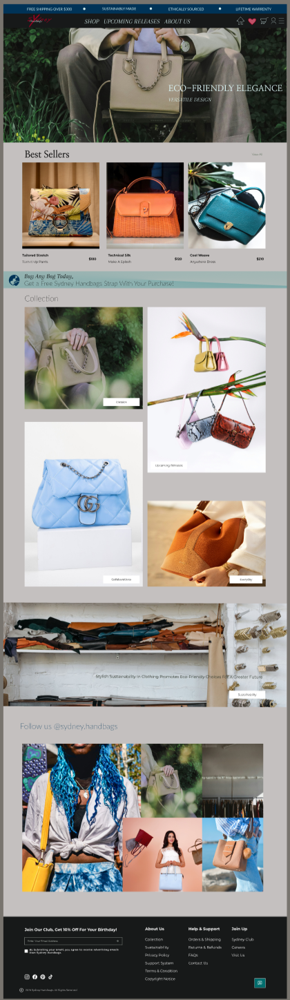
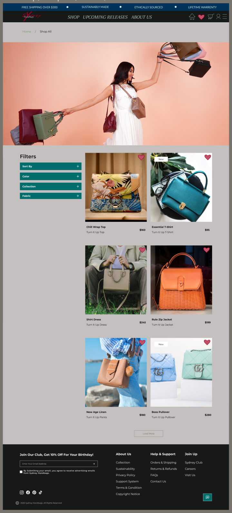
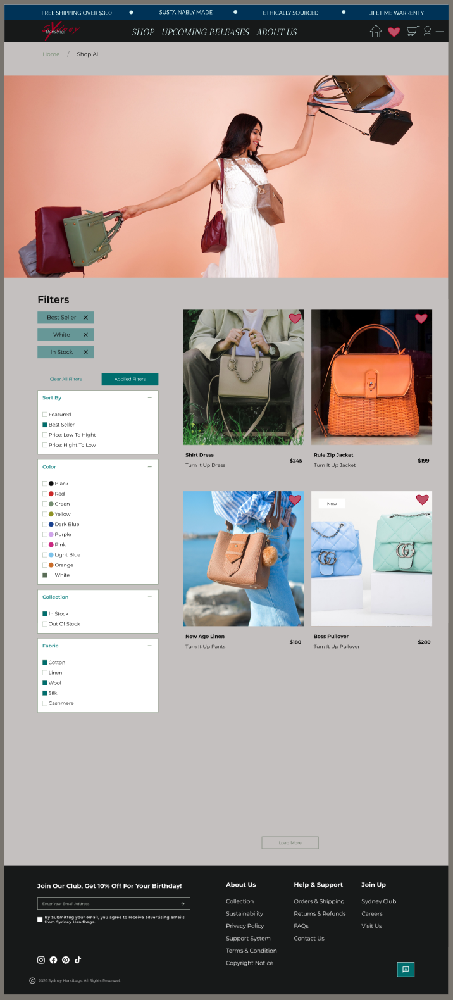
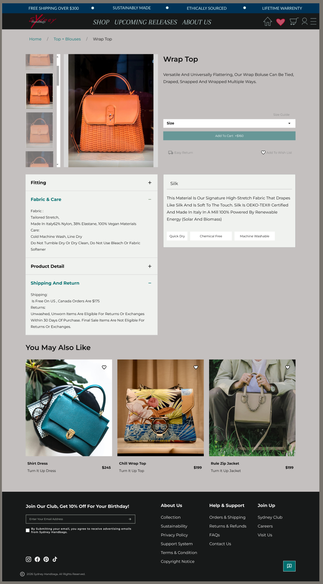
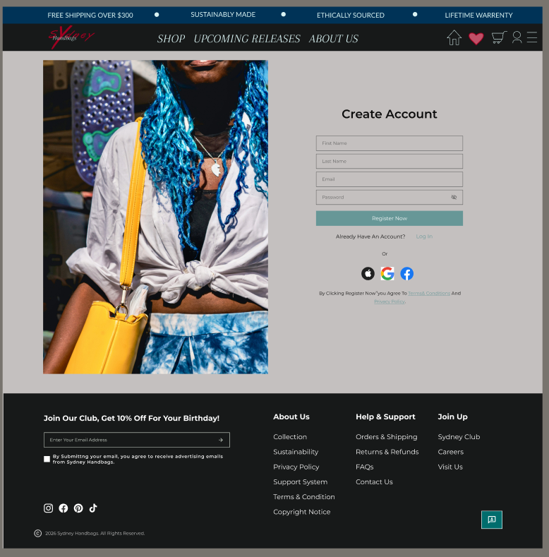
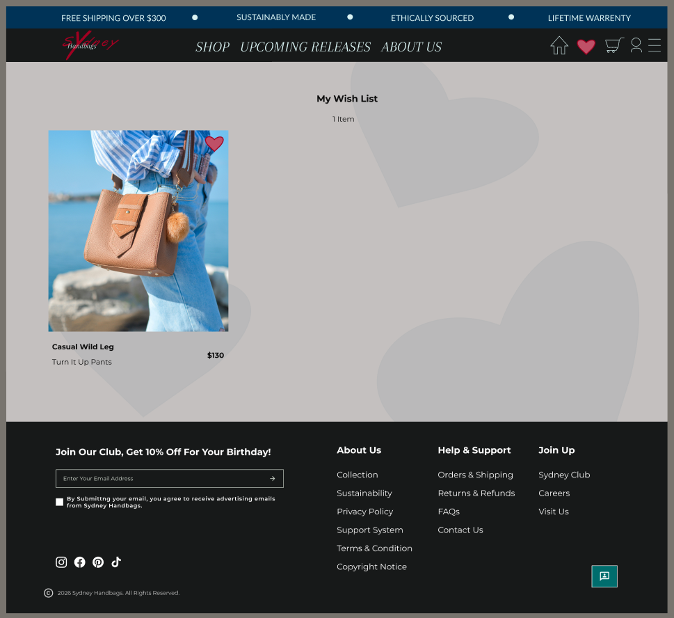
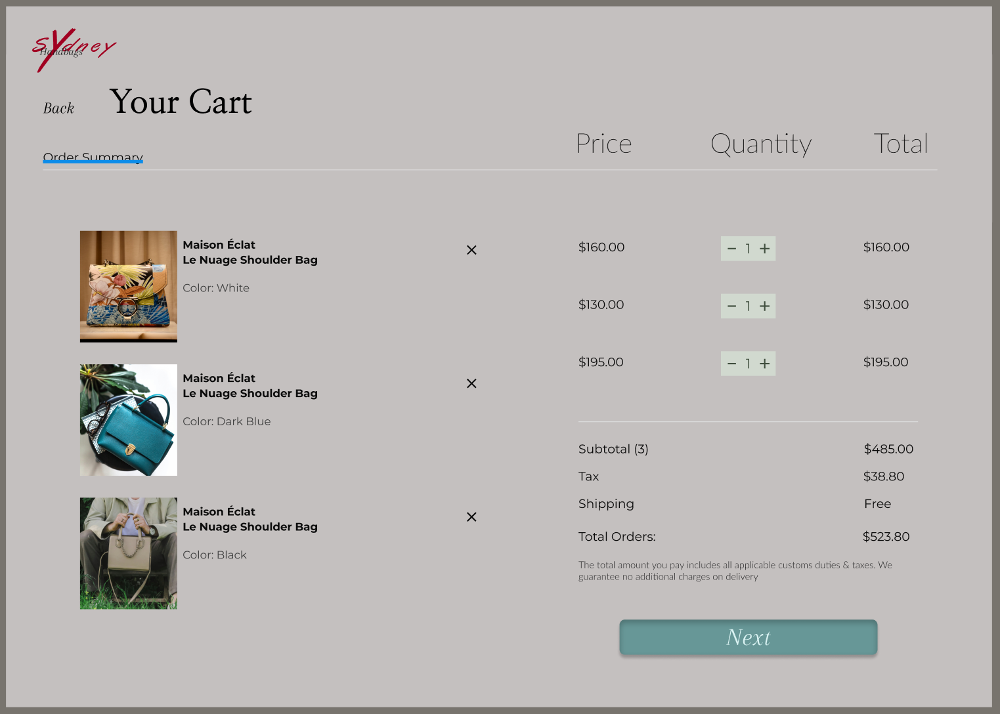
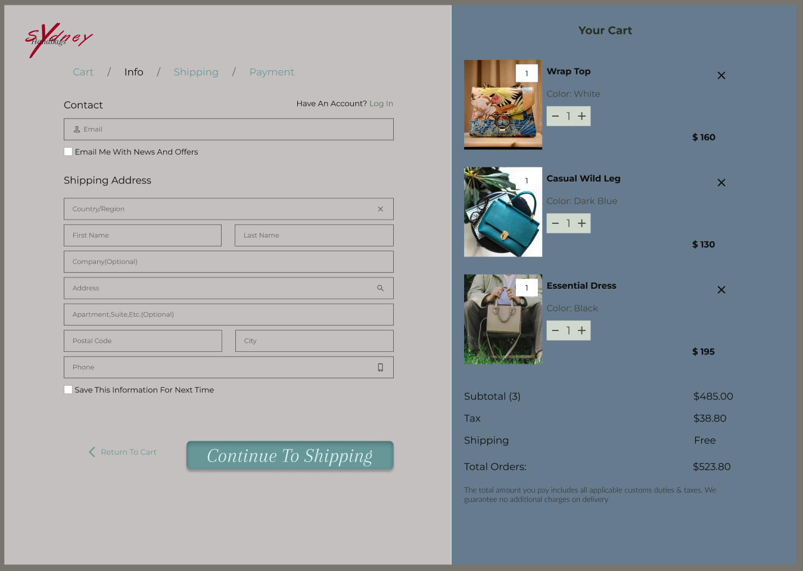
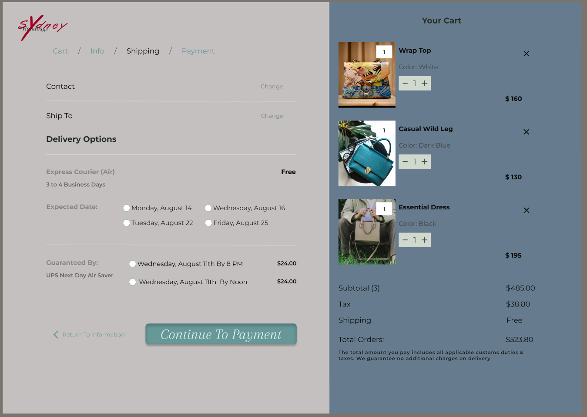
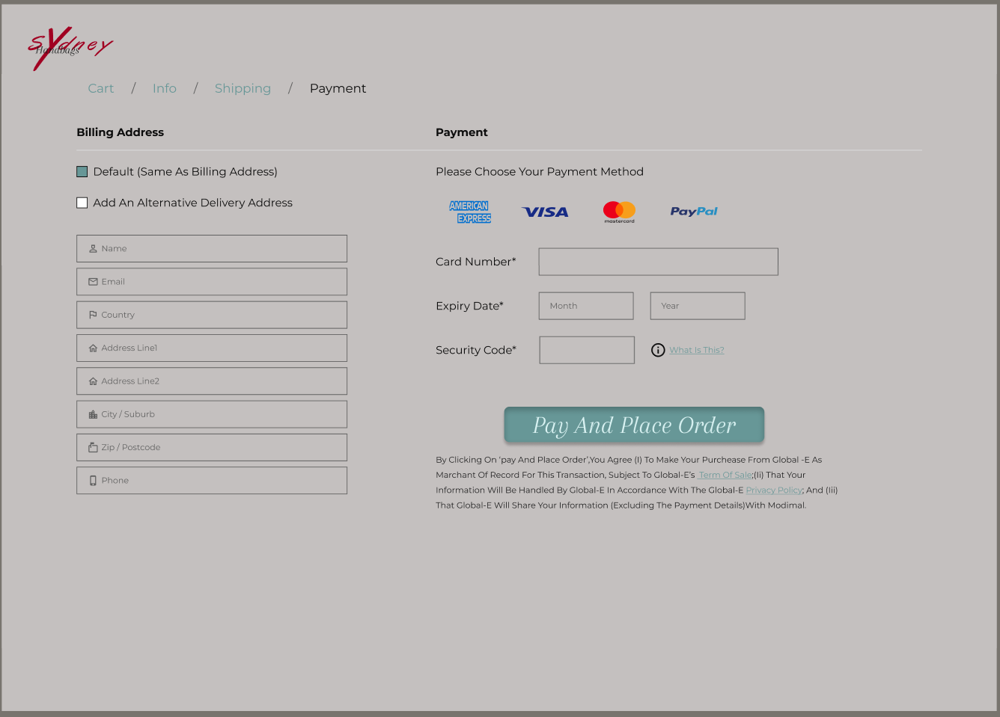
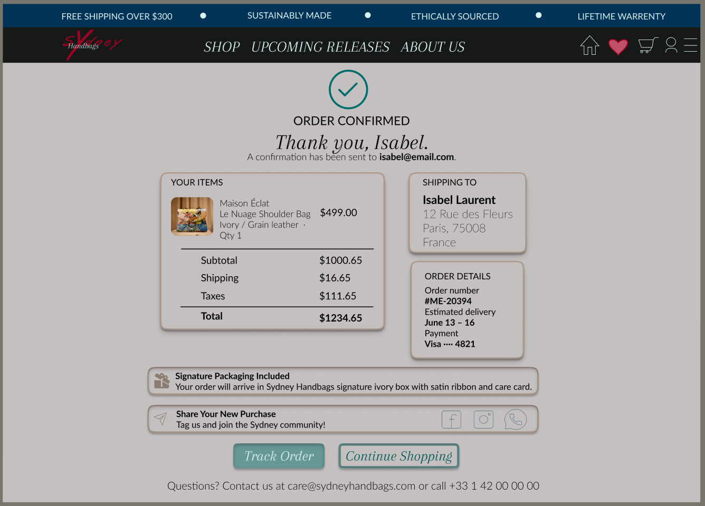
Mobile Device Screens

Why I Built It
Coming from a hardware and embedded background, I understood how things worked underneath, but I wanted real control over how an interface looks and feels before a single line of code gets written. I picked Figma because it is the tool most frontend and product teams actually design in, and the fastest way to learn it was to commit to a full project rather than a handful of disconnected practice screens.
What I Designed
I scoped out a complete multi-page app for a small business: a homepage to introduce the brand, an about page to tell its story, an items catalog to browse products, and a checkout flow to carry a purchase through to completion. Designing the full journey, rather than isolated screens, forced me to think about navigation, state, and consistency the same way a user would experience them end to end.
Components & Auto Layout
Rather than rebuilding the same buttons, cards, and nav bars on every page, I built them once as reusable components and let auto layout handle spacing and resizing as content changed. This is where the tool really clicked for me, updating a component once and watching it propagate everywhere it was used is the design equivalent of writing a function instead of copying code.
Design System
I established a consistent set of color styles, type scales, and spacing rules so every screen felt like part of the same product. Defining these as shared styles up front kept the whole design coherent and made later changes a matter of editing one definition instead of hunting through every frame.
Interactive Prototyping
To make the design feel real, I wired the screens together into an interactive prototype with working navigation and transitions, so the full flow from landing on the homepage to completing checkout could be clicked through end to end. Prototyping surfaced friction points that were invisible in static mockups and shaped how I refined the layouts.
What I Took Away
This project gave me a working fluency in Figma and, more importantly, a real understanding of how thoughtful design decisions translate into the interfaces I now build on the frontend. It is where my interest in design and development genuinely converged.